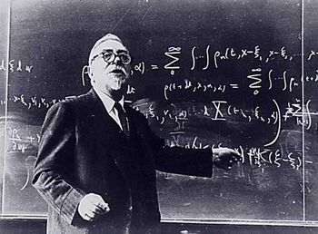
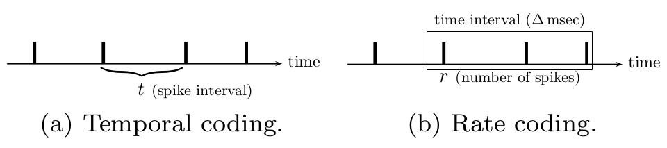
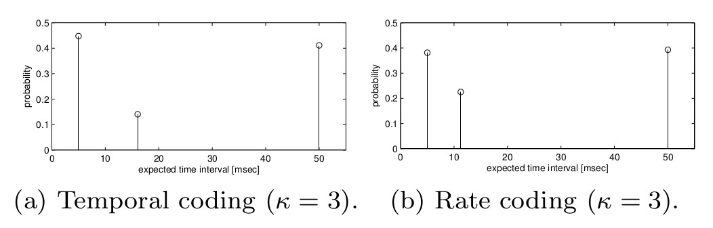

Theoretical and Computational Neuroscience
Lucas S. Simões and Paulo R. O. Castro
Outline of this presentation
- Introduction - Why modeling the Brain?
- Section I - Of Bytes and Brains
- Section II - Bayes in The Brain
- Section III - Information Theory and Neuroscience
- Wrapping Up - Conclusions and Other Works
Computational Neuroscience
Interdisciplinary field of science that study the brain function in terms of the information processing properties of the structures that make up the nervous system.
The brain is one of the most interesting complex systems in the universe and the most efficient signal processing device know.
Why modeling the Brain?
Theoretical models are used to frame hypotheses that can be directly tested by biological and psychological experiments
How?
Models must capture the essential features of biological systems at multiple spatial-temporal scales, from membrane currents, proteins, and chemical coupling to network oscillations, architecture, learning and memory.
Why using computers to do so?
To estimate the behavior of a system that is too complex for analytical solutions, but also becase of the similarity to the brain.

"...could only be made by a team os scientists, each specialist in his own field but each possessing a throughly sound and trained acquaintance with the fields of his neighbors"
- Norbert Wiener
Lines on inquiry
- Single-neuron modeling
- Sensory processing
- Memory and synaptic plasticity
- Cognition
- Consciousness
Section I - Of Bytes and Brains
Section II - Bayes in the Brain
Section III -
Information
Theory and
Neuroscience
Differences from artificial systems and why using this theoretical approach
Feedback
Pathways connecting regions of higher-level brain function to regions of lower level functionality. This gives rise to top-down processing theories and selective attention.
What is Information Theory?
Information theory is a branch of applied mathematics and computer science involving the quantification of information.
History and Importance of Information Theory
Parameters of a transmission:
- Transmission Power
- Transmission Rate
- Transmission Code
Shannon work to solve perfect transmission problem
Transmission Rate vs. Channel Capacity
Intra-Organism Communication
And the limitation of this presentation
Basic concepts of Information Theory
The importance of source and channel coding
Compressing an 8-bit message
00110101
15 most common messages: 4-bits
Other 241 messages: 1111 + 8-bits
What if we had to compress a very large number of 8-bits messages?
\[N \rightarrow Total\]
\[K \rightarrow Common\]
Total of bits required:
\[4K + 12(N - K)\]
Probability formalism
Sequence of messages, each having a probability density $p(X)$
\[\{x_1, x_2, x_3, ...\}\]
Assume that $15$ messages have $5\%$ of chance of ocurring each. The other $241$ have the remaining $25\%$
The expected number of bits required to compress a single message can be calculated as the following:
\[\sum_i p(x_i) b(x_i)\]
Is there a better way of compressing these messages?
Concatanating and dealing with symbols
Entropy
\[H(X) = -E_{p(X)}[\log p(x)]\]
\[H(X) = -\sum_{i = 1}^n p(x_i)\log p(x_i)\]
Quantifies the expected value of the information contained in a message, therefore providing an absolute limit on the best lossless encoding possible.
Shannon Coding Theorem
As the number of symbols go to infinity, it is possible to compress each symbols to $H(X)$ bits on average, and it's impossible to do better.
Binary sequence to be transmitted to another device
\[\{s_1, s_2, ...\}\]
An noisy channel introduces random errors with probability $p$
\[\{x_1, x_2, ...\} \xrightarrow{channel} \{\tilde{x}_1, \tilde{x}_2, ...\}\]
What sequence $\{x_i\}$ should be sent over the channel if the aim is to send $\{s_i\}$ reliably to the receiver?
The message $S$ is divided in block of length $K$, each encoded to a block of length $N$
Example: parity bit
\[K = 2\]
\[N = 3\]
Rate of the code
\[R = \frac{K}{N}\]
If $K$ is large, a sofisticated form of redundancy can be introduced, even keeping rate $R$ constant
Channel Capacity
There is a rate $C$ such that, for any rate $R < C$ and any desired error rate $\varepsilon > 0$, exists a $K$ and a block coder/decoder such that the receiver can decode each bit with error probability less that $\varepsilon$.
Mutual Information: Intuition
Measures how much information the output provides about the input. The more reliable the channel, the larger the mutual information.
Example: dice roll
\[X \to \{1, ..., 6\}\]
\[Y \to \{odd, even\}\]
Before knowing $Y$: $H(X) = \log_2 6$
After knowing $Y$: $H(X|Y) = \log_2 3$
\[I(X;Y) = H(X) - H(X|Y)\]
Example: Binary Channel
In this channel, $X$ takes the value of one with probability $q$, and the error probability is $p$
$I(X;Y) = H(q) - H(p)$
Chosing $X$ to maximize $I(X;Y)$, gives us $I(X;Y) = 0.469$. If we transmit at rates below this, error-free communication is possible.
\[C = \sup(I)\]
Neuroscience Models using Information Theory
Difficulties
Assumptions and differences from engineering systems
Why is Entropy useful in neuroscience?
The brain compresses information
Why are Channel Capacity and Mutual Information useful in neuroscience?
Neuronal spikes as depending on input, similar to a noisy channel
Modulation: Neuronal Spikes and Spike Interval Coding

Example: Channel Capacity of a Neuron

\[C_T = 34,68 bps\]
\[C_R = 44,95 bps\]
Discrete distribution doesn't reflect the biology of the system
Optimizing output
Given the plasticity and evolution of neural systems, this is a reasonable approach
Discussion and Interpretation
Input and Output
- Single and memoryless input
- Less restrictive assumptions
- Soft and Hard Decoding of $\tilde{X}$
Discreteness
- The capacity is achieved by a discrete probability distribution
- We believe that this is not true on biological systems, therefore it's working under it's capacity
- Feedback is prevalent in many parts of the brain
- Information may be shared by many neurons
Other works
- Non-separation of computation and communication on neural systems (Gastpar et al., 2003)
- Bayesian algorithms during decision making, predictions and pattern recognition (Rao and Ballard, 1999; S. Lee and Mumford, 2003; Knill and Pouget, 2004; George and Hawkins)
- Analog cortical error correction codes (Fiete et al., 2008)
- Directed information theory and applications (Granger, 1969; Marko, 1973; Rissanen and Wax, 1987; Massey, 1990; Tatikonda and Mitter, 2009; Hesse et al., 2003; Eichler, 2006; Waddell et al., 2007; Amblard and Michel, 2011; Quinn et al., 2011)
- Relationship between control, information theory and thermodynamics (Mitter and Newton, 2005; Friston, 2010; Mitter, 2010)
References
- Destexhe, A., & Contreras, D. (2006). Neuronal computations with stochastic network states. Science (New York, N.Y.), 314(5796), 85–90. doi:10.1126/science.1127241
- Dimitrov, A. G., Lazar, A. A., & Victor, J. D. (2011). Information theory in neuroscience. Journal of Computational Neuroscience.
- O’Reilly, R. C. (2006). Biologically based computational models of high-level cognition. Science (New York, N.Y.), 314(5796), 91–4. doi:10.1126/science.1127242
- McDonnell, M. D., Ikeda, S., & Manton, J. H. (2011). An introductory review of information theory in the context of computational neuroscience. Biological Cybernetics. doi:10.1007/s00422-011-0451-9
- Colombo, M., & Series, P. (2012). Bayes in the Brain--On Bayesian Modelling in Neuroscience. The British Journal for the Philosophy of Science, 63, 697–723. doi:10.1093/bjps/axr043
References
- Wikipedia contributors. "Bayesian approaches to brain function." Wikipedia, The Free Encyclopedia. Wikipedia, The Free Encyclopedia, 9 Apr. 2014. Web. 21 Jun. 2014.
- Wikipedia contributors. "Computational neuroscience." Wikipedia, The Free Encyclopedia. Wikipedia, The Free Encyclopedia, 18 Mar. 2014. Web. 21 Jun. 2014.
- Wikipedia contributors. "Information theory." Wikipedia, The Free Encyclopedia. Wikipedia, The Free Encyclopedia, 9 Jun. 2014. Web. 21 Jun. 2014.